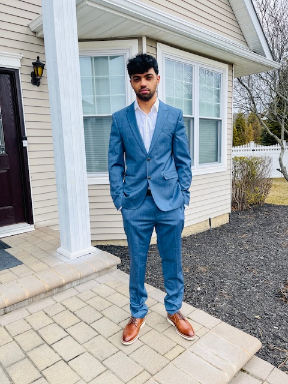

Skills
HTML, CSS, Basic JavaScript, Troubleshooting, Teamwork, Time management

I am a Business and Information Technology student at Hofstra University. I transferred after earning my Associate's degree in IT. I am currently learning more about web development and information systems. I am also a member of the Hofstra men’s soccer team.
HTML, CSS, Basic JavaScript, Troubleshooting, Teamwork, Time management
I am passionate about soccer and about playing on the Hofstra men's soccer team. Playing at a competitive level has helped me build teamwork, discipline, and leadership skills. It has also taught me how to stay focused and perform under pressure.
I am interested in information technology and how systems support businesses and organizations. I enjoy learning about troubleshooting, software tools, and basic networking concepts. I will continue working to strengthen my technical and analytical skills.
Email: hamadfarooq79@gmail.com